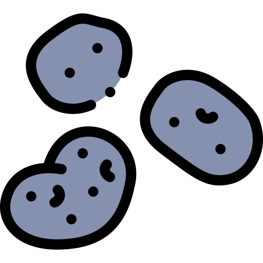
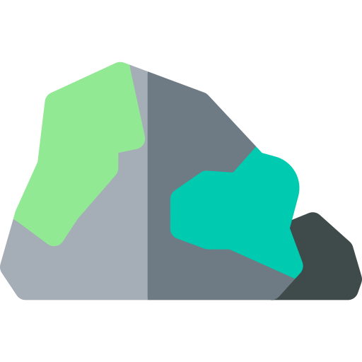

About Us

Rock Bottom Adoption Agency is an independent, 501(c)3 non-profit organization. All funding for the organization comes from private donations. We do not receive any funding from any government agencies.
Our History 
Rock Bottom was created on April 4, 2021 as an organization dedicated to homeless rocks. It was founded in Springfield, Missouri by Adam Barnes and Richard Peterson. They decided to start the company after finding too many stray rocks.
Our Mission 
From day 1, our mission here at Rock Bottom Adoption Agency has been to provide care to rocks in need, find forever homes for rocks, and promote rock welfare. Click here to adopt a rock today!